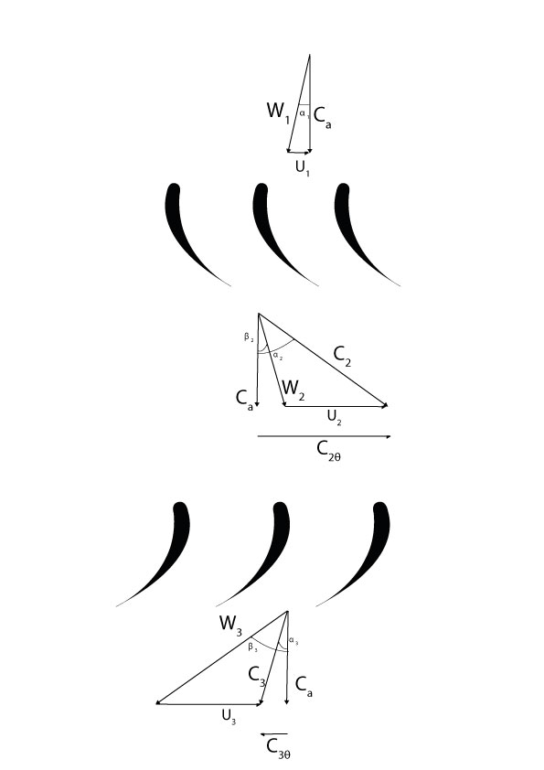
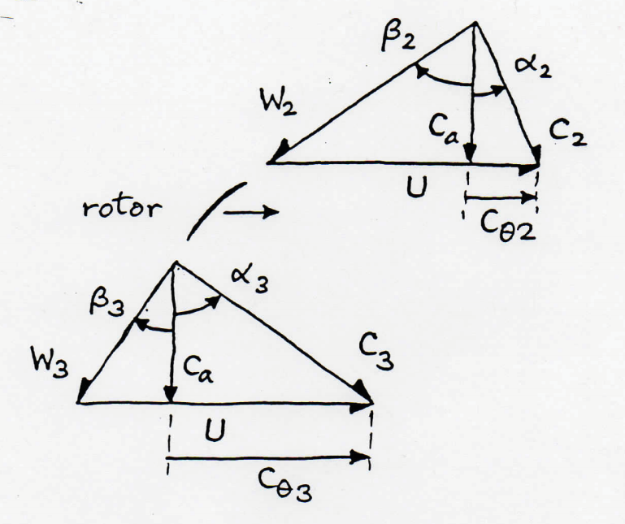

In the turbine stage of an engine the working fluid first flows through stator then the rotor. The ducts in the stator blades decrease in area thereby acting as a nozzle. The working fluid then passes through the rotor blades where kinetic energy is converted into mechanical work.
A single stage turbine has a blade speed of 600 m/s and a specific work output of 288 KJ/kg. The velocity at exit from the stage is axial. Calculate the tangential component of absolute velocity at inlet to the rotor blades.
Step 1: List all the variables that the question gives.
W/m: 288 KJ/Kg
U: 600 m/s
Step 2: Identify the variables that the question wants you to answer.
Cθ2
Step 3: Draw velocity triangles for the turbine.
Step 4: Since the question states that the exit velocity is purely axial, this means that Cθ3 = 0. Hence we can use the turbomachinery euler equation to get the answer.
W/m = U(Cθ2 - Cθ3)
Cθ2 = ẇ/U
Consider an axial turbine stage. The flow enters the nozzle row of the stage with axial velocity of 170 m/s. The turbine rotational speed is 14000 rpm, the blade mean diameter is 483 mm, the nozzle exit flow angle is 72 degrees and the rotor outlet flow is in the axial direction. You may assume the turbine is isentropic. Assume that the air enters and leaves the blades at the blade angle and that the axial velocity remains constant throughout the stage. Calculate the work and power developed by the stage based on the mean diameter conditions.
Step 1: Tick all the variables that the question gives.
Step 2: Identify the variables that the question wants you to find.
Step 3:Draw velocity triangle for the turbine.
Step 4: Calculate the absolute velocity,C2
Step 5: Calculate the tangential blade speed at the mean diameter
U = Dm x π x (Blade speed(rev/s)/60)
Step 6: Use trigonometry to find the tangential component of the absolute velocity, Cθ2
Step 7: Use trigonometry to find the relative angle β2
Step 8: Use trigonometry to find the relative angle β3
Step 9: Use turbomachinery Euler equation to calculate specific work, ẇ.
An axial-flow steam turbine stage operates with superheated steam, which may be assumed to expand adiabatically and reversibly. The stage inlet pressure is 90 bar and the temperature is 440oC. Calculate the stage specific work.